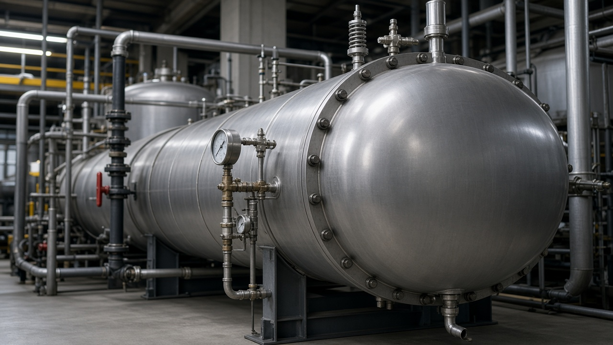

Bài viết · AL-01
Chai chứa khí: 7 quy tắc lưu trữ và di chuyển hay bị bỏ qua
Chai chứa khí là bình áp lực di động — khác với nồi hơi hay bình chịu áp cố định, nó di chuyển qua nhiều tay, nhiều khu vực, và thường bị đối xử như một vật dụng thông thường. Sai tư thế lưu trữ hoặc một va đập vào van có thể biến nó thành vật phóng năng lượng lớn trong tức khắc.
Bảy quy tắc dưới đây không phải lý thuyết. Chúng lặp lại trong hầu hết báo cáo sự cố liên quan đến chai khí tại công trình và nhà máy, và phần lớn có thể phòng tránh bằng thói quen đơn giản.

Vì sao chai khí nguy hiểm hơn vẻ ngoài của nó
Một chai khí công nghiệp cỡ thông dụng chứa khí ở áp suất có thể lên tới hàng trăm bar. Nếu van bị gãy do va đập hoặc đổ, áp suất lớn thoát ra trong tức khắc có thể đẩy chai bay với lực đủ để xuyên tường mỏng hoặc gây chấn thương nặng cho người ở gần. Đây là lý do chai khí luôn được xếp vào nhóm thiết bị áp lực cần kiểm soát chặt, dù kích thước nhỏ và xuất hiện phổ biến ở hầu hết công trình, xưởng cơ khí, phòng thí nghiệm.
7 quy tắc lưu trữ và di chuyển
- Đứng thẳng, cố định chống đổ — dùng xích, khung giữ hoặc giá chuyên dụng; không dựa tạm vào tường hay để nằm tự do.
- Nắp bảo vệ van khi không sử dụng — van là điểm yếu nhất của chai; nắp bảo vệ phải luôn được lắp lại ngay khi tháo thiết bị sử dụng ra.
- Tách khí cháy, khí oxy hóa và khí trơ theo đúng quy định lưu trữ — không để chung khu vực nếu tiêu chuẩn yêu cầu cách ly, kể cả khi có vẻ tiện lợi hơn khi để gần nhau.
- Không kéo lê, không nhấc chai bằng van — van không được thiết kế để chịu tải trọng của toàn bộ chai.
- Sử dụng xe đẩy hoặc phương tiện chuyên dụng khi di chuyển — không vác, không lăn chai trên mặt nghiêng hoặc bề mặt gồ ghề.
- Tránh nhiệt độ cao và ánh nắng gay gắt kéo dài — nhiệt làm tăng áp suất bên trong, vượt ngoài tính toán thiết kế nếu chai bị phơi nắng lâu.
- Nhãn, mã màu và nội dung khí phải rõ, đúng và còn đọc được — không sử dụng chai không rõ nhãn, không tự sơn lại hoặc dán đè nhãn gốc.

Tình huống thường gặp tại công trình
Ba tình huống lặp lại nhiều nhất trong thực tế công trình: chai được để đứng nhưng không cố định, chỉ dựa vào tường hoặc thùng đồ khác — một va chạm nhẹ đủ để đổ; chai được vận chuyển trên xe cải tiến không có khung giữ, chai lăn tự do trong lúc xe di chuyển qua mặt đường không bằng; và chai hàn cắt để ngoài nắng cả ngày gần khu vực có nguồn nhiệt khác, làm tăng nguy cơ vượt áp không chủ đích.
Phần lớn các tình huống này không xuất phát từ thiếu kiến thức, mà từ việc coi lưu trữ chai khí là việc phụ, không phải một phần của kế hoạch an toàn công trình. Khi khu vực để chai khí được thiết kế sẵn — có giá cố định, có bóng che, có phân khu theo loại khí — thói quen đúng sẽ hình thành tự nhiên hơn nhiều so với việc chỉ nhắc nhở bằng lời.
Kiểm tra trước khi cấp phát và sử dụng
Trước khi đưa một chai khí vào sử dụng, người cấp phát nên kiểm tra nhanh: thân chai không có biến dạng, ăn mòn rõ hoặc hư hỏng cơ học; nhãn còn rõ và đúng loại khí cần dùng; van đóng kín, không rò khi kiểm tra bằng dung dịch phát hiện rò phù hợp; ngày kiểm định thủy lực của chai (nếu áp dụng) còn hiệu lực. Một khâu kiểm tra 30 giây này loại bỏ phần lớn rủi ro trước khi chai được đưa đến khu vực làm việc.
Tình huống thực tế thường gặp
Trên hiện trường, áp lực tiến độ và thói quen “làm tắt” thường khiến người ta bỏ qua đúng những bước kiểm soát quan trọng nhất. Khi sự cố xảy ra, mọi người mới nhìn lại và thấy chuỗi sai lệch nhỏ đã xuất hiện từ trước: checklist hình thức, brief thiếu, permit ký nhưng không xác minh, vùng nguy hiểm không được phong tỏa.
Bài học chung: đừng đợi hậu quả lớn mới siết quy trình. Hãy biến các điểm dừng việc thành phản xạ tập thể.
Sai lầm hay gặp khi áp dụng
- Biết đúng nhưng không ghi nhận bằng chứng
- Giao việc mà không giao quyền dừng việc
- Đào tạo một lần rồi coi như xong năng lực
- Chỉ siết trước thanh tra / đánh giá
Việc làm trong tuần này (1 hành động)
Chỉ chọn một việc — làm xong trong 7 ngày, có bằng chứng.
- Hành động: áp dụng một điểm kiểm soát then chốt của AL-01 vào checklist đang dùng
- Bằng chứng: Ảnh / phiếu checklist có ngày giờ + chữ ký hoặc xác nhận giám sát
- Người chịu trách nhiệm: Người phụ trách HSE khu vực + giám sát trực tiếp
Ghi nhớ: Không có bằng chứng = chưa làm. Họp ngắn cuối tuần chỉ cần trả lời: đã làm / chưa / vướng gì.
Tóm tắt mang ra hiện trường
- Luôn cố định chai khí đứng thẳng — không dựa tạm, không để nằm tự do.
- Van là điểm yếu nhất: lắp nắp bảo vệ khi không dùng, không nhấc hoặc kéo bằng van.
- Tách khí cháy, oxy hóa và khí trơ theo đúng quy định lưu trữ.
- Dùng xe đẩy chuyên dụng khi di chuyển, tránh nắng gắt và nguồn nhiệt kéo dài.
- Kiểm tra nhãn, thân chai và van trước khi cấp phát — không dùng chai không rõ nhãn.
Bạn phụ trách thiết bị áp lực / nồi hơi
Học bài bản với khóa AL-01
Kỹ thuật an toàn thiết bị áp lực — học online, tiến độ cá nhân, 99.000đ, kiểm tra cuối khóa, chứng nhận tùy điều kiện.